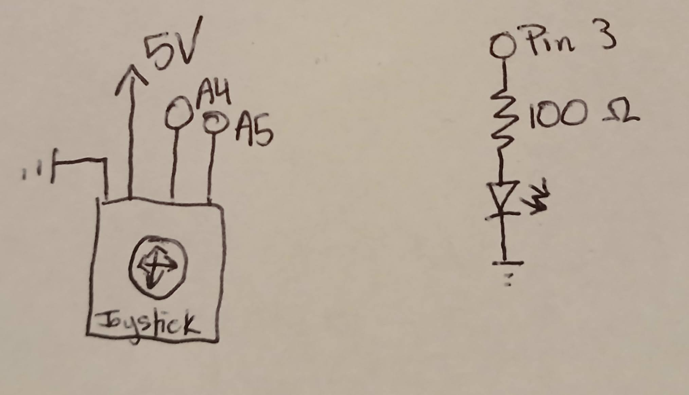
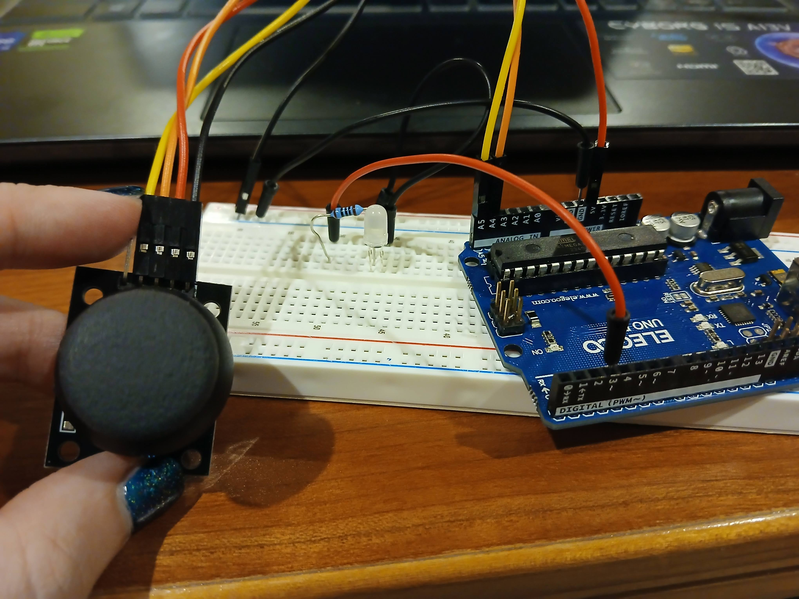

Shows two circuits, the LED circuit and joystick circuit. The LED has a 100 ohm resistor (5 V - 3.3 V = 1.7 V,
1.7 V / 0.02 A = 85 ohms) and is connected to pin 3 for power. The joystick is connected to 5V, ground, and pins A4 and A5 of the Arduino.
Circuit

Shows the circuit with the LED and joystick connected to the Arduino. The x-axis of the joystick is connected to pin A4,
and the y-axis is connected to pin A5. The LED is connected to pin 3. All are connected to the same ground.
Code
index.html file
<!DOCTYPE html>
<html>
<head>
<meta charset="utf-8" />
<title>a6</title>
<style>
body {
margin: 0;
overflow: hidden;
}
</style>
</head>
<body>
<!-- Scripts for various p5.js functions and libraries. Inspired by 'glob' example and other
example code from HCDE 439. -->
<script src="https://cdn.jsdelivr.net/npm/p5@1.11.4/lib/p5.js"></script>
<script src="https://cdn.jsdelivr.net/npm/p5@1.11.4/lib/addons/p5.sound.min.js"></script>
<script src="https://cdn.jsdelivr.net/npm/planck@latest/dist/planck.min.js"></script>
<script src="https://p5play.org/v3/p5play.js"></script>
<script src="https://unpkg.com/@gohai/p5.webserial@^1/libraries/p5.webserial.js"></script>
<!-- Calling game.js for main code. -->
<script src="game.js"></script>
</body>
</html>
game.js file
// Some code based on code from 'glob' example from HCDE 439. Mainly background and style setup.
// This program runs a small game. Allows user to move a joystick (data from .ino file) to move
// a circle on the screen. Player can 'eat' other circles on the screen, and only dies once they
// hit a wall. The overall player score can be seen visually on an LED connected to the arduino.
const BAUD_RATE = 9600; // This should match the baud rate in your Arduino sketch
let port, connectBtn;
// Declare some color constants
const colors = {
red: "#BF616A",
orange: "#D08770",
yellow: "#EBCB8B",
green: "#A3BE8C",
blue: "#5E81AC",
purple: "#B48EAD",
background: "#2E3440",
foreground: "#ECEFF4",
};
// Declare sprite variables
let walls;
let player, food;
// Initialize some parameters
let startingMass = 2; // character starting value
let drag = 0; // add drag to slow down character
let impulse = 1; // movement
let foodSize = 15; // food value
let playerSize = 20; // starting player value
let maxFood = 30;
let foodChance = 0.02; // chance of finding more food
let sizeThreshold = 5;
const gameOverMessage = "Oh dear, you are dead!";
let gameOver = false;
let finalScore = 0; // final score rises, and ouputs to an LED
let scoreSize = 32;
let xVal;
let yVal;
function setup() {
setupSerial(); // create serial connection
createCanvas(windowWidth, windowHeight); // create the background
noStroke();
setupBounds();
setupPlayer();
setupFood();
player.overlapping(food, eat); // 'eat' the food function
}
function draw() { // draws the background
receiveData(); // reads data from .ino file
// Turning off the background has a fun effect!
background(colors.background);
handlePlayerMove(); // player movement function
if (food.length < maxFood) { // chance to create more food on screen
if (random() < foodChance) new food.Sprite();
}
drawScore(); // add score panel in upper right of screen
}
function receiveData() {
/**
* Receive data over serial from your Arduino
* We're terminating data with a newline character here
* i.e., we need to Serial.println() in our Arduino code
* Inspired by example code from 439
*/
const portIsOpen = checkPort(); // Check whether the port is open (see checkPort function below)
if (!portIsOpen) return; // If the port is not open, exit the draw loop
let str = port.readUntil("\n"); // Read from the port until the newline
if (str.length == 0) return; // If we didn't read anything, return.
let inputArray = str.trim().split(","); // Trim whitespace and split on commas
const x = Number(inputArray[0]); // set x value to value recieved from .ino file
const y = Number(inputArray[1]); // set y value to value recieved from .ino file
console.log(x); // send to console log, for debugging
console.log(y);
if (x >= 505) { // check to see if joystick is to the left or right of default. Default should be set based on individual joystick
xVal = 1;
} else {
xVal = -1;
}
if (y >= 510) { // 510 is the default of current joystick
yVal = 1;
} else {
yVal = -1;
}
}
function drawScore() { // draw score box in upper right corner
textAlign(RIGHT, TOP);
textSize(scoreSize);
let wordWidth = textWidth(finalScore);
fill(colors.purple);
rectMode(CORNERS);
rect(width, 0, width - wordWidth - 20, scoreSize + 20, 20);
fill(colors.foreground);
text(finalScore, width - 10, 10);
}
function endGame() { // message and screen changes once player hits a wall
// let message1 = `Oh dear, you are dead!`;
let scoreMessage = `Final score: ${finalScore}`;
let messageWidth = textWidth(scoreMessage);
// Draw background rect
fill(colors.purple);
rectMode(CENTER);
rect(width / 2, height / 2, messageWidth + 20, scoreSize + 20, 20);
// Draw Text
textAlign(CENTER, BOTTOM);
textSize(scoreSize);
fill(colors.foreground);
text(scoreMessage, width / 2, height / 2);
// Stop game
gameOver = true;
noLoop();
}
function restart() {
gameOver = false;
finalScore = 0;
// need to remake player sprite?
// start loop again
}
function updateScore(newScore) { // update the score in upper right corner and send data to .ino for LED
if (newScore > finalScore){
finalScore = Math.ceil(newScore);
let toSend = map(newScore, 0, 1000, 0, 255);
console.log('writing:', toSend);
constrain(toSend, 0, 255);
port.write(int(toSend));
}
}
function eat(spr, food) { // eat food function, adding mass to player, subtracting mass from food (until gone)
spr.d += 0.5;
food.d -= 0.5;
if (spr.idNum === player.idNum) updateScore(spr.d);
if (food.d < sizeThreshold) food.remove(); // if food is all 'eaten' food disappears
}
function handlePlayerMove() { // player movement function
player.speed = 0.5; // adjustable speed
if (xVal == 1) { // use -1/1 values from before to determine if player should move left/right and up/down
player.vel.x += impulse; // use impulse to make the move
} else {
player.vel.x -= impulse; }
if (yVal == 1) {
player.vel.y -= impulse;
} else {
player.vel.y += impulse;
}
if (player.overlapping(walls)) endGame(); // if player hits wall, player dies and game ends
}
function setupBounds() { // set up the walls around the edge of the screen
walls = new Sprite(
[
[0, 0],
[width, 0],
[width, height],
[0, height],
[0, 1],
],
"static"
);
walls.color = colors.background;
}
function setupPlayer() { // only at the beginning of the code, set up the player
player = new Sprite(); // create new player
player.color = colors.yellow; // set player color
player.d = playerSize; // set player size
player.bounciness = 1; // set player bounciness
finalScore = player.d; // set score to player size (right now, 20)
}
function setupFood() { // set up new food at the beginning as game starts
food = new Group();
food.color = colors.green; // all food is green
food.d = foodSize; // set food size
food.x = () => random(0, width - foodSize); // place food randomly
food.y = () => random(0, height - foodSize);
food.amount = maxFood; // start with the max amount of food
}
// Three helper functions for managing the serial connection.
function setupSerial() {
port = createSerial();
// Check to see if there are any ports we have used previously
let usedPorts = usedSerialPorts();
if (usedPorts.length > 0) {
// If there are ports we've used, open the first one
port.open(usedPorts[0], BAUD_RATE);
}
// create a connect button
connectBtn = createButton("Connect to Arduino"); // if not connected
connectBtn.position(5, 5); // Position the button in the top left of the screen.
connectBtn.mouseClicked(onConnectButtonClicked); // When the button is clicked, run the onConnectButtonClicked function
}
function checkPort() {
if (!port.opened()) {
// If the port is not open, change button text
connectBtn.html("Connect to Arduino");
// Set background to gray
background("gray");
return false;
} else {
// Otherwise we are connected
connectBtn.html("Disconnect");
return true;
}
}
function onConnectButtonClicked() {
// When the connect button is clicked
if (!port.opened()) {
// If the port is not opened, we open it
port.open(BAUD_RATE);
} else {
// Otherwise, we close it!
port.close();
}
}
sketch.ino file
// Reads data from joystick. Sends data to LED (white)
const int X_PIN = A4; // x value of the joystick
const int Y_PIN = A5; // y value of the joystick
const int LED = 3; // white LED attached to pin 3
void setup() { // runs once
Serial.begin(9600); // set to the same as .js file
Serial.setTimeout(10); // set the timeout for parseInt
pinMode(LED, OUTPUT); // set LED as output
pinMode(X_PIN, INPUT); // set joystick as input
pinMode(Y_PIN, INPUT); // set joystick as input
}
void loop() { // runs continously
Serial.print(analogRead(X_PIN)); // read x value, print without newline
Serial.print(","); // add ,
Serial.println(analogRead(Y_PIN)); // read y value, print with newline, creating parsable data
if (Serial.available() > 0) { // if recieving data about score
int brightness = Serial.read(); // set LED brightness
analogWrite(LED, brightness); // write to the LED
}
delay(100); // delay added to keep code from glitching (from inputs that are too fast)
}